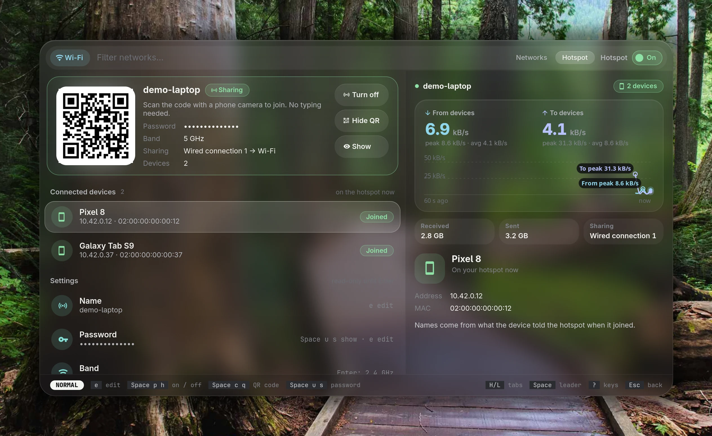

Tarang (तरंग) is Sanskrit for "wave": the radio waves your Wi‑Fi and hotspot ride on.
tarang is wi‑Fi and the hotspot for Vyom: one keyboard-driven panel that opens instantly, with live data, a preview and a key for everything. It runs on any compositor with the layer-shell protocol (sway, Hyprland, river, niri, Wayfire, labwc…). In Vayu, the desktop it was built for, it replaces networkmanager_dmenu (wifi-picker.py).
#Features
- Every connection you're on, at the top: Wi‑Fi, Ethernet, a phone over USB, mobile broadband, Bluetooth, a VPN or WireGuard, each a row under Connected (the one carrying your traffic first, a VPN under the connection it rides on), each the same way: its kind's icon, name and badge. Picked, the right side shows it live, like a Wi‑Fi network: Online or Standby, speeds, the minute's graph, totals, and its details (link speed and duplex for a cable, operator and APN for a modem, server and what it rides on for a VPN). On anything but Wi‑Fi the header says Network. Not connected, a card says why: Wi‑Fi off, NetworkManager not running, no Wi‑Fi card.
Space c ddisconnects the selected connection. - Live speeds on the right: with the network you're on picked (it is when the panel opens), the right side shows download and upload as big numbers with their peak and average, the last minute as a graph (peaks marked), data received and sent, how long you've been connected (and since when), the signal with its own line and dBm, and every fact in one place: internet (Online, Limited, Sign in, No internet), security, band and channel, IP address, router, link rate (both ways, from
iwwhen it's there), DNS, access point and IPv6. The graph opens on the whole last minute (Vyom 0.10 keeps it all along: its live state reads the counters every 2 s, every second while this panel is open) and moves once a second. Only the card's own byte counters (/sys/class/net) and signal (/proc/net/wireless) are read, so it never sends anything to measure (no speed test, no ping). - Signal as bars and a word (Excellent, Good, Fair, Weak in green, green, yellow, red), saved networks starred, then nearby ones, strongest first. Open networks get a yellow Open chip, WEP/WPA1 a red one. Scanning shows in the top bar ("Scanning…", then "Scanned 8 s ago");
rrescans. Enterconnects; a secured network you haven't joined asks for its password right in the search box (hidden;Ctrl+Sshows it), and nothing is sent until you pressEnter.- Connecting shows its steps (Associating, Authenticating, Getting an address), read from NetworkManager as they happen. When it fails it says why in red: wrong password (and asks again), out of range, no address from the router, a network that needs a user name (WPA Enterprise), a password that's too short.
- Another network picked: its signal and how it compares with the one you're on ("17 points weaker than Home Fiber 5G"), security as a chip (WPA3 strong, WPA2 good, Open with a warning that anyone nearby can read unencrypted traffic), band, channel and frequency, top speed, saved or new, metered, access point, and Connect / Forget in red:
ddasks first (yforgets), since it can't be undone. - Share (
Space c q): a QR code phones scan to join the network you're on (needs qrencode; without it, the password is shown instead). Only when you ask; the password stays hidden untilSpace u s. - A Hotspot tab (with Vayu's
vayu-hotspot, or any command with itsstatus --json/on/offinterface): a QR code to join, the name, the password (hidden untilSpace u s), the band and what it shares, the devices connected right now, the hotspot's own traffic live on the right (from and to its devices, the last minute, totals), andSpace p h(or the switch) to turn it on or off. Name, password and band are settings, read-only until you presseorEnteron one. - A Wi‑Fi on/off switch in the top bar (
Space p p); on the Hotspot tab it's the hotspot's. With Wi‑Fi off the list has one row, Wi‑Fi is off:Enterturns it on. - Vim keys (Vyom 0.7): NORMAL and INSERT modes, counts,
Spaceas the leader with a which-key strip,?for every key andSpace Spacefor a palette of every action. - Keyboard first: every action has a key, shown on its button and in the footer; the mouse works too.
- Never freezes the panel: slow commands run in the background.
#Install
#Requirements
- Vyom 0.7 or newer (Python 3.11+, PyGObject, GTK 4, gtk4-layer-shell, a Nerd Font)
nmcli- optional: qrencode (QR codes to share a network or join the hotspot)
- optional: iw (the link rate both ways in the live view)
#Install
git clone https://github.com/Theyashsawarkar/tarang ~/.local/share/vyom/plugins/tarang
vyom reload # pick it up (or log out and in)
vyom tarang # open it; run it again to closeGive it a key in your compositor, e.g. sway:
bindsym $mod+<key> exec vyom tarang#Update and uninstall
git -C ~/.local/share/vyom/plugins/tarang pull && vyom reload # update
rm -rf ~/.local/share/vyom/plugins/tarang && vyom reload # uninstall#Usage
Open it with vyom tarang (or your key; vyom tarang hotspot opens the Hotspot tab). It opens in NORMAL mode, where every letter is a key and typing changes nothing: j / k move, H / L switch tabs, Enter connects, dd forgets (it asks), / types a filter (INSERT mode; Esc goes back). A password or a hotspot field puts the search box in INSERT mode by itself: Enter submits, Esc cancels, Ctrl+S shows what you type. Space is the leader: wait a moment after it and a strip shows what comes next.
Vyom's vim keys work too: ? and Space ? list every key, Space Space is the palette, q closes, Esc steps back, Space u f is fullscreen, Space r refreshes, j / k move, gg / G jump, / searches.
Normal mode, Networks (where it opens; / types a filter)
| Key | Action |
|---|---|
Enter | Connect to the selected network (asks for its password if needed) |
d d | Forget the selected saved network (y confirms: its password goes too) |
r | Rescan for networks now |
Normal mode, Hotspot
| Key | Action |
|---|---|
Enter | Edit the selected hotspot setting (the band: switch it) |
e | Edit the selected hotspot setting |
Both modes
| Key | Action |
|---|---|
Ctrl+s | Show or hide the password you type (works while typing) |
Leader (Space)
| Key | Action |
|---|---|
Space p p | Toggle Wi-Fi on or off |
Space p h | Toggle the hotspot on or off |
Space c d | Disconnect the selected connection (Wi-Fi, a cable, a phone, a VPN) |
Space c q | Show the current network as a QR code (to share it) |
Space u s | Toggle the passwords (show or hide them) |
Space y p | Copy the network's password (the hotspot's on its tab) |
Space y s | Copy the network's name (the hotspot's on its tab) |
Space d d | Forget the selected saved network (y confirms) |
Leader (Space), Hotspot
| Key | Action |
|---|---|
Space c q | Toggle the hotspot's QR code |
Keys that moved in this release still say where they went: Ctrl+f → d d.
#Configuration
Everything is optional, in ~/.config/vyom/config.toml under [plugin.tarang]:
| Setting | Default | What it does |
|---|---|---|
hotspot_command | vayu-hotspot | The hotspot command (the tab hides without it) |
Run vyom reload after editing.
#Troubleshooting
- Nothing opens.
vyom listshows every installed tool, and why one is skipped (a missing requirement, or a Vyom that's too old). - It opened, then something failed. Look for a
Tracebackin the daemon's log,journalctl --user -u vyom -u vyom-daemon -b(without systemd:~/.local/state/vyom/daemon.log), and open an issue with it. - No blur or rounded corners. That's the compositor: on SwayFX, add
layer_effects "vyom" { blur enable; corner_radius 20; shadows enable }.
#The Vyom family
Each tool is its own repository, so you install only the ones you want:
| Tool | What it does | |
|---|---|---|
| dvara | द्वार, gateway | The app launcher |
| ganit | गणित, mathematics | The calculator and converter |
| smriti | स्मृति, memory | Clipboard history |
| bhava | भाव, feeling, emotion | The emoji picker |
| tarang (this one) | तरंग, wave | Wi‑Fi and the hotspot |
| setu | सेतु, bridge | Bluetooth |
| doot | दूत, messenger | Your phone, through KDE Connect |
| patra | पात्र, vessel | Docker containers |
| akashvani | आकाशवाणी, voice from the sky | Notifications |
| raga | राग, melody | YouTube music and video |
| mudra | मुद्रा, gesture | Keybinding search |
| urja | ऊर्जा, energy | The battery at a glance |
| vishram | विश्राम, rest | The power menu |
| kendra | केन्द्र, centre | Quick settings |
#Contributing
Bug reports, ideas and pull requests are welcome: see CONTRIBUTING.md for the development setup and the few rules every tool follows, and CHANGELOG.md for what changed in each release. Please report security issues privately (SECURITY.md).
#License
MIT.